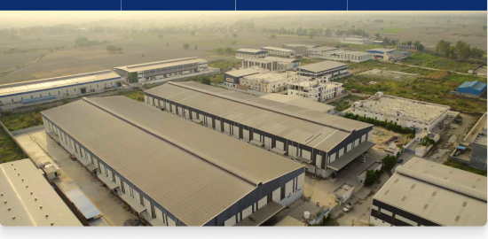
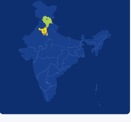
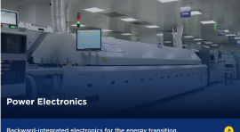
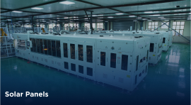
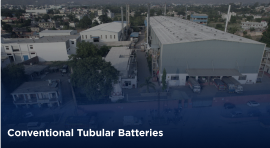

Manufacturing
Infrastructure
Building the backbone of India's clean energy future
8Manufacturing Units
3R&D Centres
1Technology Centre, Hong Kong
7 Lac+Sq. Ft Area
Strategically located across North India


3 Manufacturing Facilities of Conventional Tubular BatteriesBaddi, Himachal Pradesh
1 Manufacturing Facility of Lithium BatteryManesar, Haryana
1 Manufacturing Facility of Solar PanelsGanaur, Haryana
1 Manufacturing Facility of Power ElectronicsJhunjhunu, Haryana
1 Manufacturing Facility of Power ElectronicsMangolpuri, Delhi
1 Manufacturing Facility of Power ElectronicsBahadurgarh, Delhi
Four divisions. One integrated ecosystem.
Explore the products and infrastructure powering each of Eastman's manufacturing divisions.
Lithium Batteries
Powering India's last mile e-mobility
›
Power Electronics
Backward-integrated electronics for the energy transition
›
Solar Panels
High-efficiency modules, proudly made in India
›
Conventional Tubular Batteries
India's largest conventional tubular battery manufacturer
›